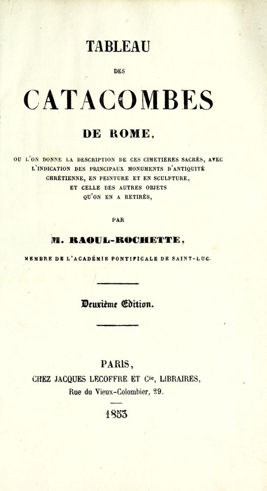
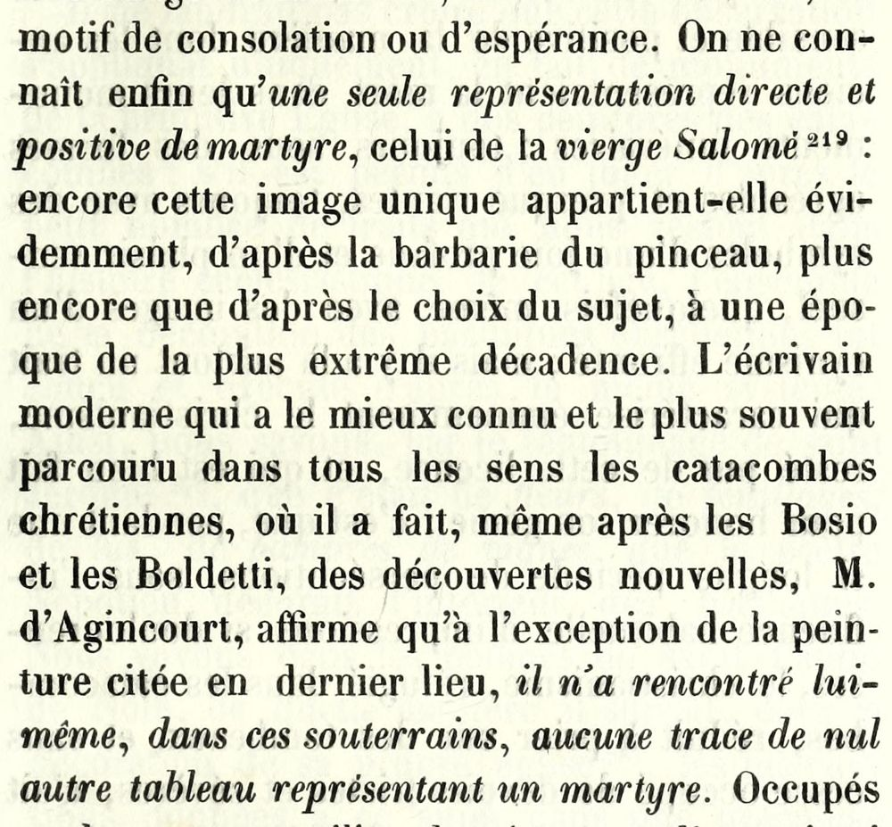
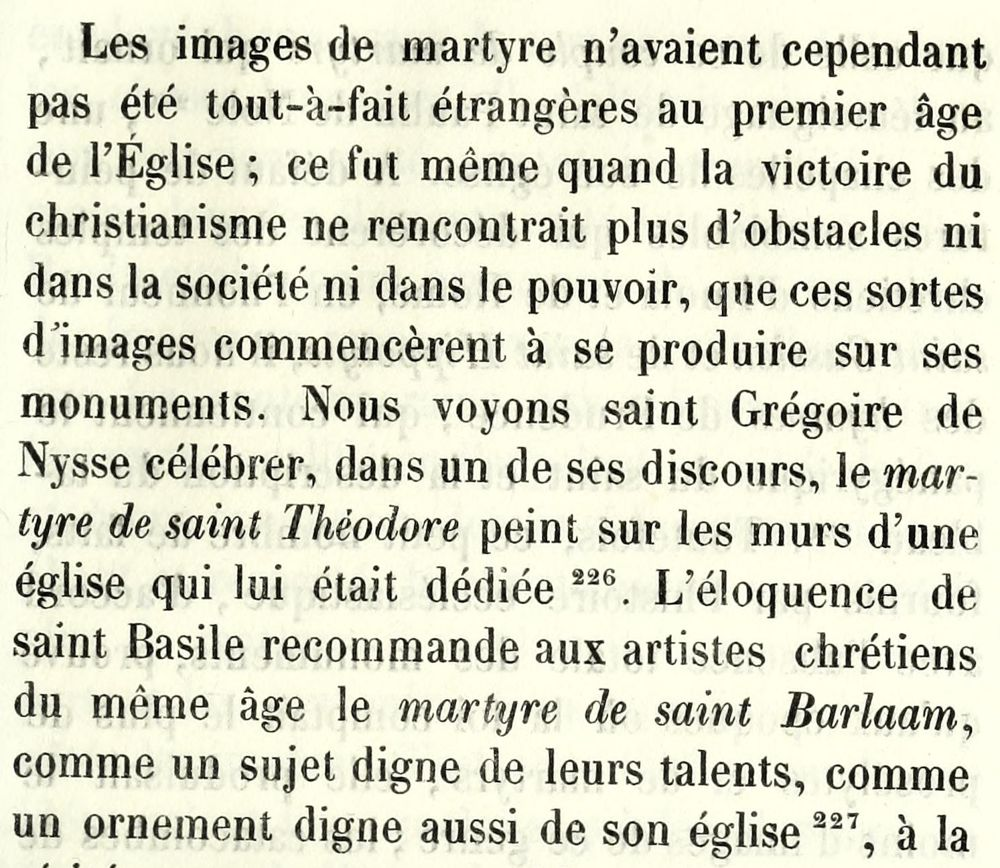

Orpheus as pagan type and Christian symbol (p. 138)
French: p. 138, scan.

… On both sides it is the same figure, seated, in the first flower of youth, the head covered with a tiara enriched with gold, with embroidered trousers; … his lyre, which he holds against his left side, still resounds under his fingers; but his eye, which seems fixed on some distant object, and his brow, which appears marked with deep meditation, show him wholly absorbed in the contemplation of divine things. Such is the Orpheus of the paintings described by Philostratus and Lucian, as he appears in our paintings of the catacombs; this Christian reminiscence of a profane type serves to teach us, by a decisive example, in what manner a crowd of pagan motifs and symbols could enter Christianity, by means of the models and traditions of ancient art, while receiving there a new application with a Christian sense.
Original French
… C’est, de part et d’autre, le même personnage, assis, dans la première fleur de la jeunesse, la tête couverte d’une tiare enrichie d’or, avec des anaxyrides brodées ; … sa lyre, qu’il soutient contre son flanc gauche, résonne encore sous ses doigts ; mais son œil, qui semble fixé sur quelque objet éloigné, et son front, qui paraît empreint d’une méditation profonde, le montrent entièrement absorbé dans la contemplation des choses divines. Tel l’Orphée des peintures décrites par Philostrate et par Lucien, se produit dans nos peintures des catacombes ; cette réminiscence chrétienne d’un type profane sert à nous apprendre, par un exemple décisif, de quelle manière une foule de motifs et de symboles païens avaient pu s’introduire, à l’aide des modèles et des traditions de l’art antique, au sein du christianisme, en même temps qu’ils y recevaient une application nouvelle avec un sens chrétien.
The one picture of a martyrdom (p. 187)
French: p. 187, scan n212. The italics are Raoul-Rochette’s; his note numbers omitted. Highlighted: what Lecky reports in note 6.

Lastly, only one single direct and positive representation of martyrdom is known, that of the virgin Salome; and even this unique picture plainly belongs, judging by the barbarism of the brush still more than by the choice of subject, to an age of the most extreme decadence. The modern writer who knew the Christian catacombs best and went through them most often in every direction, making new discoveries there even after Bosio and Boldetti, M. d’Agincourt, affirms that, except for the painting just mentioned, he himself never met in those underground passages any trace of any other picture representing a martyrdom.
Translation: this edition’s draft.
Original French
On ne connaît enfin qu’une seule représentation directe et positive de martyre, celui de la vierge Salomé: encore cette image unique appartient-elle évidemment, d’après la barbarie du pinceau, plus encore que d’après le choix du sujet, à une époque de la plus extrême décadence. L’écrivain moderne qui a le mieux connu et le plus souvent parcouru dans tous les sens les catacombes chrétiennes, où il a fait, même après les Bosio et les Boldetti, des découvertes nouvelles, M. d’Agincourt, affirme qu’à l’exception de la peinture citée en dernier lieu, il n’a rencontré lui-même, dans ces souterrains, aucune trace de nul autre tableau représentant un martyre.
Martyrdoms painted in the basilicas (pp. 191–192)
French: p. 191, scan n216 (facsimile and the first two sentences read on the image); the rest of the paragraph, to p. 192, from the OCR. Highlighted: the instances Lecky says Raoul-Rochette “collected”.

Images of martyrdom had not, however, been wholly foreign to the first age of the Church; indeed it was only when the victory of Christianity no longer met any obstacle, either in society or in the state, that pictures of this kind began to appear on its monuments. We find St Gregory of Nyssa praising, in one of his sermons, the martyrdom of St Theodore painted on the walls of a church dedicated to him. The eloquence of St Basil commends to the Christian artists of the same age the martyrdom of St Barlaam, as a subject worthy of their talents and an ornament worthy of his church, though we do not know whether this appeal or wish of the preacher had any effect. […] But the painting of the martyrdom of St Euphemia, mentioned in the acts of the second Council of Nicaea, had really been executed, as had that of the pair of martyrs which, on the testimony of St Paulinus of Nola, adorned one of the chapels of his church. […] Yet this small number of facts, supplied by ecclesiastical history, agreeing with the total absence of monuments, proves […]
Translation: this edition’s draft. The bracketed omissions include Ephrem’s homily on the Forty Martyrs and Prudentius’s hymns on the pictures of Cassian and Hippolytus.
Original French
Les images de martyre n’avaient cependant pas été tout-à-fait étrangères au premier âge de l’Église; ce fut même quand la victoire du christianisme ne rencontrait plus d’obstacles ni dans la société ni dans le pouvoir, que ces sortes d’images commencèrent à se produire sur ses monuments. Nous voyons saint Grégoire de Nysse célébrer, dans un de ses discours, le martyre de saint Théodore peint sur les murs d’une église qui lui était dédiée. L’éloquence de saint Basile recommande aux artistes chrétiens du même âge le martyre de saint Barlaam, comme un sujet digne de leurs talents, comme un ornement digne aussi de son église, à la vérité, sans que nous sachions si cet appel ou ce vœu de l’orateur sacré a eu son effet. […] Mais la peinture du martyre de sainte Euphémie, dont il est parlé dans les actes du second concile de Nicée, avait été bien réellement exécutée, ainsi que celle de ce couple de martyrs qui ornait, au témoignage de saint Paulin de Nole, une des chapelles de son église. […] Toutefois, ce petit nombre de faits, fournis par l’histoire ecclésiastique, d’accord avec l’absence totale des monuments, prouve […]
Editor’s notes on this page
Page 138 describes the Orpheus of the Christian paintings of the cemetery of St Callixtus as the same figure as the Orpheus of the profane paintings described by Philostratus the younger and by Lucian, and draws the lesson that pagan motifs entered Christian art through ancient models while receiving a new Christian meaning. It supports Lecky’s note that Orpheus appears as a Christian symbol; the claim that Eusebius made him a type of Christ is not on this page (see the Marangoni page).
Further down the rabbit hole
Sources that Lecky cites in the notes next to the ones that cite this page.
- Marangoni, Delle cose gentilesche e profaneOrpheus as Christ on p. 45; two other notes not there
- Augustine, De civitate DeiSeventy reports, not miracles, and a town, not a province
- Ciampini, Vetera monimentaThe saint’s halo: a sign of eternity, or a shield against pigeons?
- Didron, Iconographie chrétienneHow medieval art pictured Christ the Judge
- Tertullian, De baptismoLecky’s two water passages checked against Migne
- Raoul-Rochette, Cours d’archéologieWhy Greek statues were naked: “God is naked”, and emperors stripped for apotheosis


Backlinks
Every place in Rationalism in Europe that links to this page (generated automatically when the site is built).